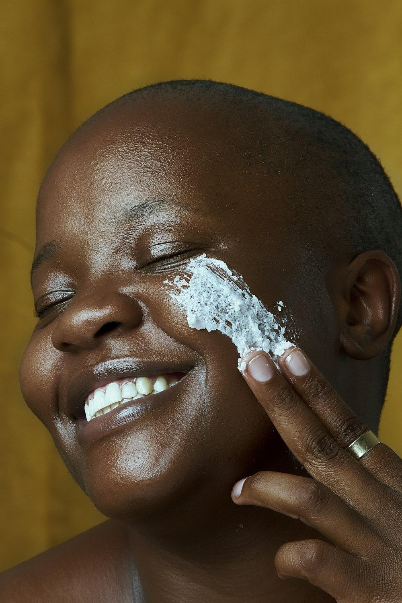
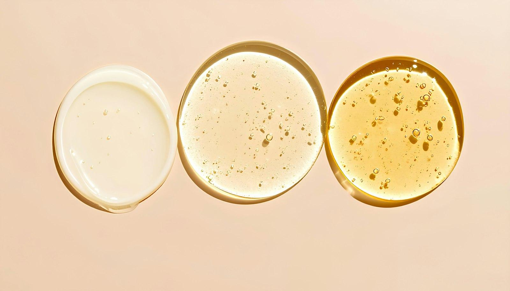
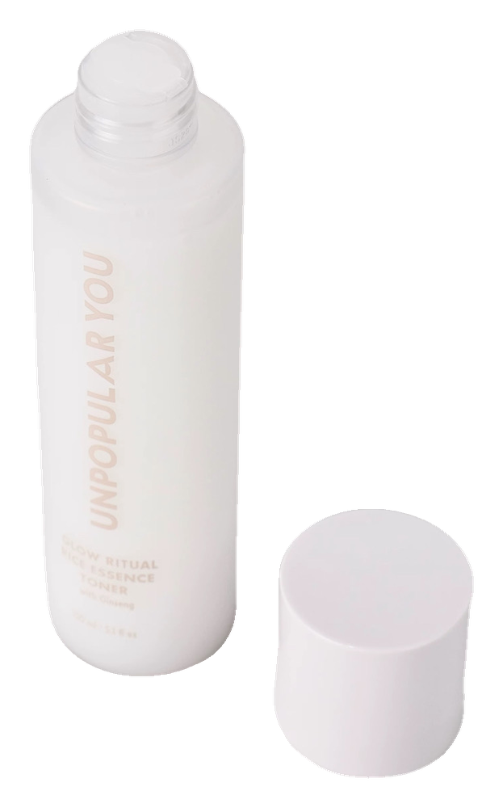
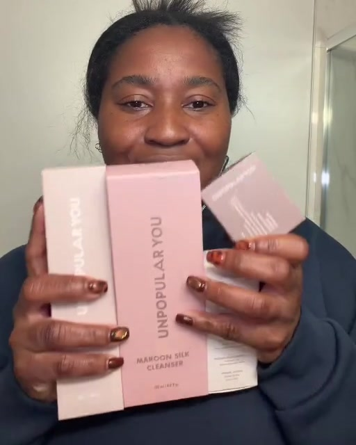
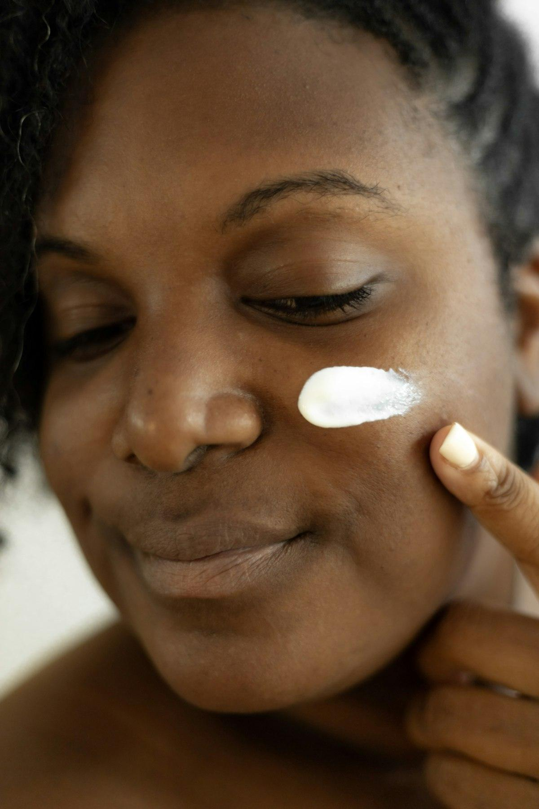

Skincare for melanin-rich skin that glows
Jamaican botanicals meet Korean-inspired gentleness in a barrier-first routine that targets the look of dark spots and calms sensitivity — without stripping your skin.
- Nurse-founded
- Made for melanin-rich skin
- 20,000+ community

“I've tried so many brightening serums. This one actually works on my dark spots and my skin stays calm.”Tasha · Hyperpigmentation

Toner featured in the Blissim Beauty Box
“A hydration bath for the most sensitive skin.”BlissimGlow Ritual Toner ·
Glow Up Beauty Box
“A thoughtful, barrier-first routine made for melanin-rich skin.”GlamourQuote to confirm
“Jamaican botanicals with a Korean-inspired gentleness.”VogueQuote to confirm
“The nurse-founded brand rethinking skincare for darker skin tones.”TatlerQuote to confirm
The Core Four
Four steps. One order.
Cleanse, prep, correct, seal — every product labelled by step.
The formula thinking
Two traditions, one routine
The botanicals Shauna grew up with, made gentle enough for every day.

Rooted in
Jamaican botanicals
Plants used for generations in Caribbean skin care — soothing, nourishing and naturally rich in antioxidants.
- Soursop leaf
- Moringa leaf
- Guava leaf
- Pumpkin enzyme

Made gentle by
Korean-inspired science
Fermented, layered, barrier-loving formulas that deliver results without irritation.
- Rice ferment
- Ginseng
- Triple ceramides
- Peptides
- Niacinamide
A gentle glow
Rice ferment and ginseng soften and brighten the look of skin, without the irritation stronger actives cause.
Built to protect
Triple ceramides, colloidal oat and soursop leaf strengthen your barrier, keeping melanin-rich skin calm and even.
Targeted, not harsh
Tranexamic acid and niacinamide target the look of dark spots while guava leaf keeps it gentle.

Not sure where to start?
Find your routine in 60 seconds
Inside every layer
Ingredients that work gently
Hover or tap a card to see what each one does — and where you'll find it.
 Soothing
SoothingColloidal oat
Colloidal oat
Calms the look of redness and relieves dry, tight skin — the first thing stressed skin needs.
 In the Barrier Moisturizer
In the Barrier MoisturizerRice ferment
Rice ferment + ginseng
Softens and brightens the look of skin for a natural, lit-from-within glow.

In the Glow Ritual TonerSoursop leaf
Soursop + moringa
Traditional Caribbean leaves that comfort, nourish and protect.
In the Barrier Moisturizer Targeted
TargetedTranexamic acid
Tranexamic acid + 3% niacinamide
Targets the look of dark spots and uneven tone — without redness or peeling.
In Rooted Radiance SerumReal skin · real routines
See it in real life
Unfiltered, from our 20,000-strong community. Hover to preview, tap to play.

Shauna Watson · FounderMade by a nurse
As a nurse, skin health comes first for me. I wanted products that treat dark spots and sensitivity gently — made for skin like mine, and like yours.
Melanin-rich skin was either treated with products too harsh to tolerate, or left out of the conversation. After years of acne and acne scars, Shauna made her own.
- Nurse-founded
- Formulated for melanin-rich skin
- Featured in Blissim
Consumer study
Results you can feel

Self-reported · 6 weekssaid hydration lasted up to 48 hours
reported improved skin texture
reported smoother-feeling skin
★ 4.9 from verified buyers
In their own words

The Core Four Routine
Everything you need to fade the look of dark spots and strengthen your barrier
- 01CleanseMaroon Silk Cleanser
$28 - 02PrepGlow Ritual Toner
$34 - 03CorrectRooted Radiance Serum
$42 - 04SealBarrier Moisturizer
$38
✓ 30-day guarantee ✓ Secure checkout ✓ Ships in 1–2 days
FAQ
Questions, answered
Anyone with melanin-rich skin who wants results without irritation — especially if you deal with dark spots, uneven tone, sensitivity, or an over-treated barrier.
Rooted Radiance targets the look of dark spots with tranexamic acid and 3% niacinamide; the toner adds 2% niacinamide. Everything else keeps your barrier calm, because irritation can trigger more pigmentation. Daily SPF is essential.
Yes — every product is fragrance-free and formulated barrier-first. Patch test before starting anything new.
Fragrance-free and cruelty-free. Vegan status to be confirmed per product.
Softer, more comfortable skin within the first week. The look of dark spots usually takes 6–8 weeks of consistent use. Results vary.
Take the 60-second quiz, or start with the Core Four: 01 Cleanse, 02 Prep, 03 Correct, 04 Seal.
Made in the USA. Free US shipping over $60. International details to be confirmed.
Placeholder: 30-day happiness guarantee. Final wording to be confirmed.
Start today
Your barrier, first.
Four gentle steps for melanin-rich skin that glows. Free US shipping over $60 and a 30-day guarantee.